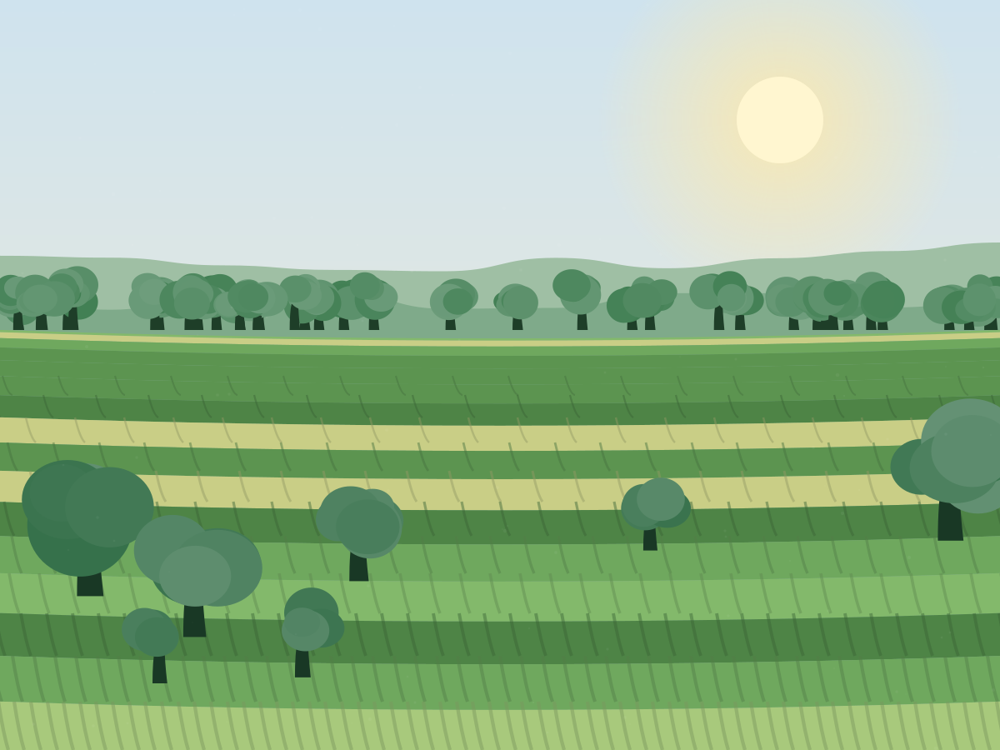
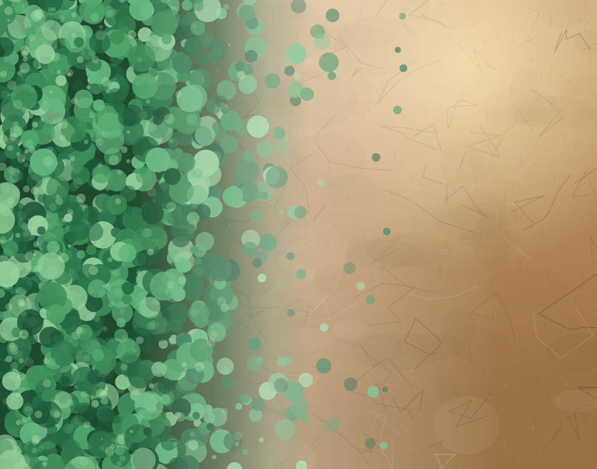
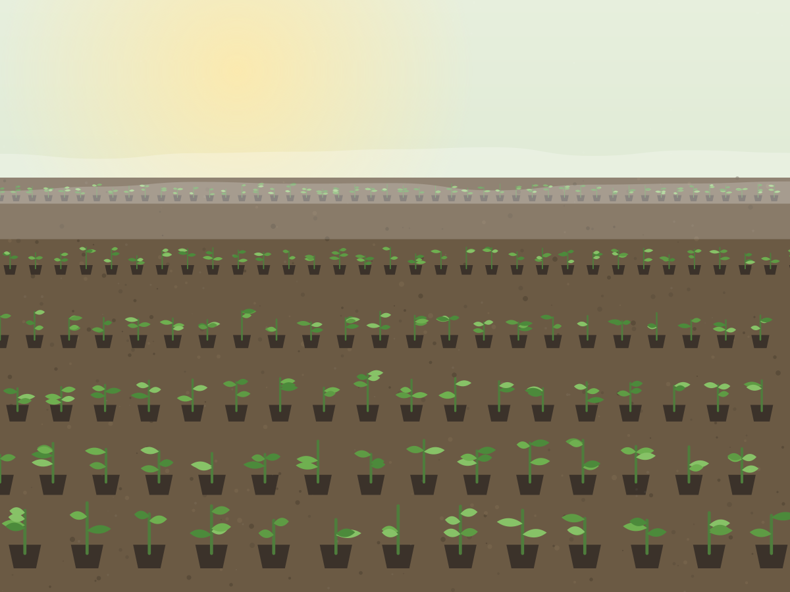
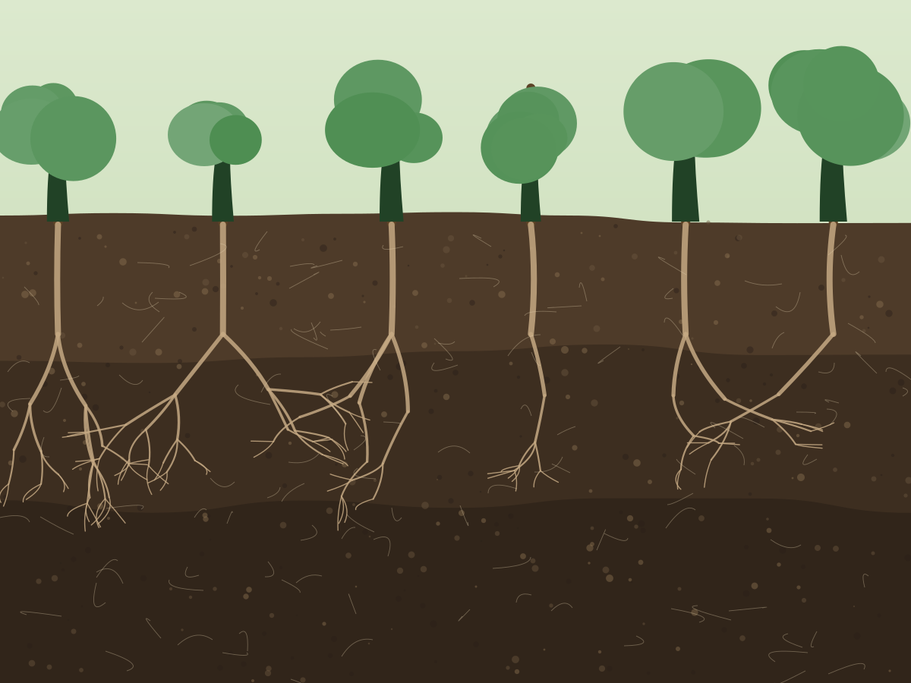
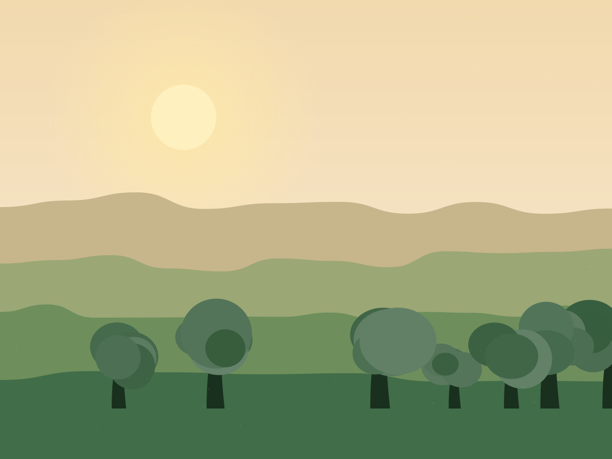

Regenerative farming
No-dig beds, long rotations and 14 miles of new hedgerow.
Our soil organic matter has risen from 3.1% to 5.4% in eight years.
Rootstock is a 240-acre farm in the Welsh borders. Every vegetable box we sell and every pound you give funds native woodland — planted by hand, monitored for three years, protected for a century.
Join 15,400+ people growing woodland




Most reforestation is funded by people a long way from the land. We do it the other way round: the farm earns, the woodland grows, and the people who plant it live twenty minutes away.

No-dig beds, long rotations and 14 miles of new hedgerow.
Our soil organic matter has risen from 3.1% to 5.4% in eight years.

27 species, seed collected within 40 miles of where it is planted.
Oak, birch, rowan, hazel, alder, aspen and small-leaved lime.

Paid planting work and training for people in the valley.
34 seasonal roles and 6 full-time apprenticeships this year.
 Riparian
Riparian
Eleven miles of riverbank shaded and stabilised, linking two ancient woodlands.
 Upland
Upland
Returning bracken-choked sheep walk to montane scrub and birchwood.
 Wet woodland
Wet woodland
Alder and willow carr re-wetted across 120 acres of drained peat.
 Orchard
Orchard
Grafting and replanting 41 Herefordshire cider varieties on nine farms.
Four live projects, one shared method: collect local seed, grow it on the farm, plant with people who live here, then come back for three years to prove it worked.
View all initiativesOne monthly email: what we planted, what survived, and exactly where the money went.
Join thousands of change-makers
COST PER TREE
£3.00
Seed collection, two years in the nursery, planting, guard, and three annual survival counts. No middlemen.
A veg box, a farm-shop visit, a one-off gift or £10 a month. It all lands in the same pot.
Gathered within 40 miles, so the trees we grow already know this weather and this soil.
Paid teams and volunteer weekends, November to March, with landowner agreements of 100 years.
Three annual survival counts per plot, published with photographs and grid references.
01
0+
Native trees planted since 2016 across 96 partner holdings.
02
0%
Three-year survival rate, counted plot by plot, not modelled.
03
0kt
Tonnes of CO₂e projected over the first twenty years of growth.
04
£0m
Raised and spent on planting — 91p in every pound reaches the ground.
We had eleven acres doing nothing but growing bracken. Rootstock turned up with seedlings grown from our own hedgerow, planted it with people from the village, and came back three winters running to count what lived. That is not marketing. That is just farming, done properly.
Elin Prydderch
Partner farmer, Cwmdu · 11 acres restored
Every planting site carries a legal covenant. No quiet felling in year twelve.
Annual accounts, plot data and failure rates published in full each February.
Peat-free compost, local seed, and guards we collect and reuse after five years.
A community interest company with an asset lock. Nobody takes a dividend.
Fund a single tree, keep a grove growing every month, or bring your team to the hillside for a day that people actually talk about afterwards.